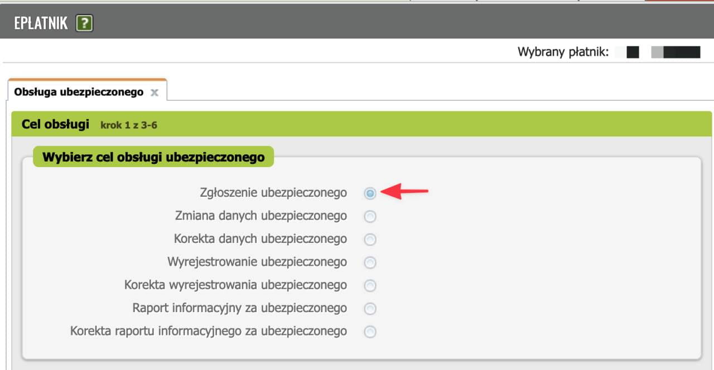
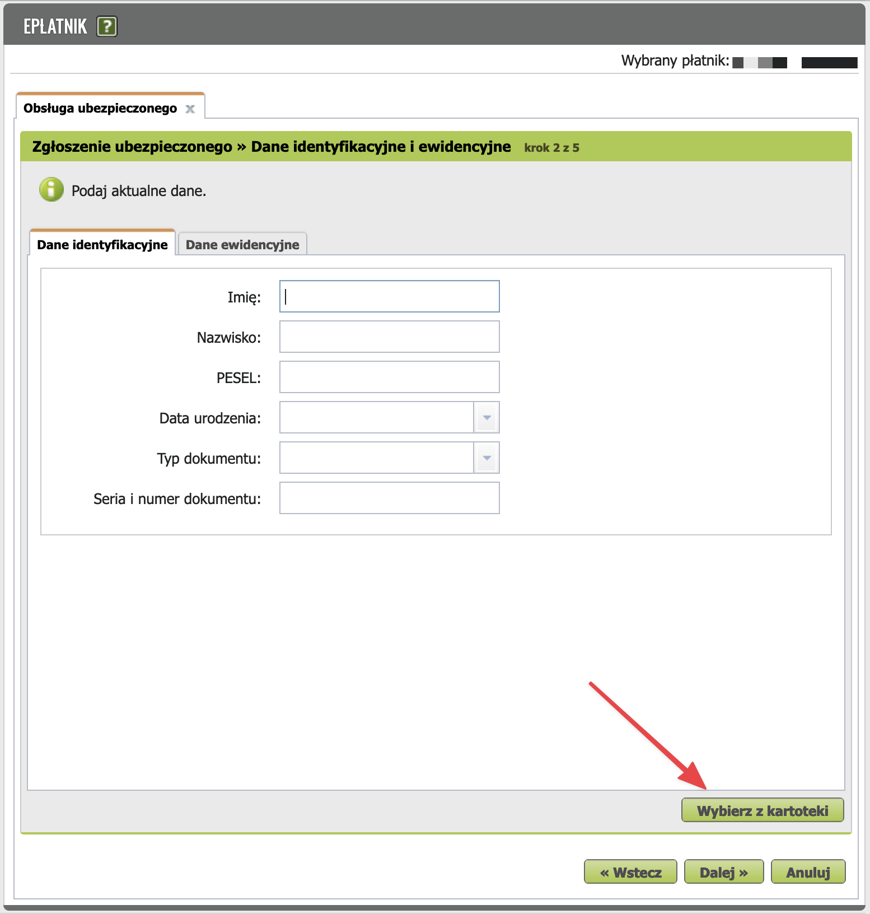
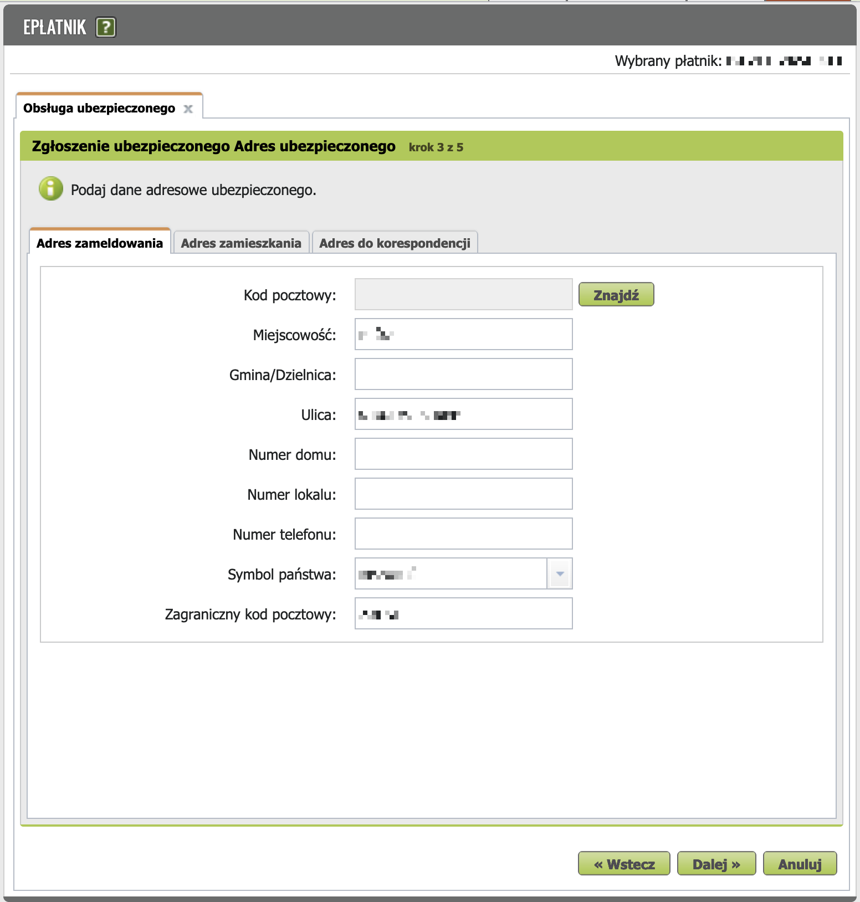
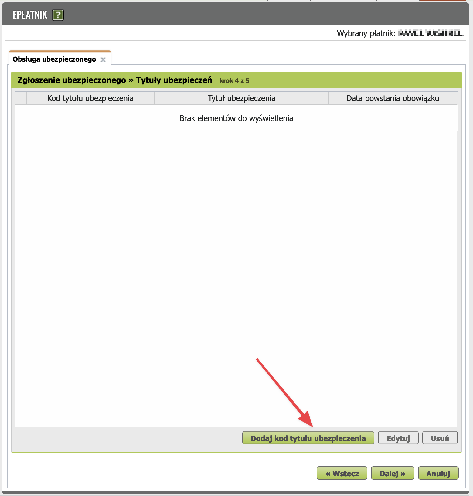
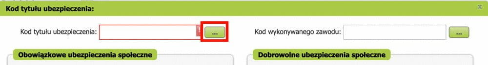
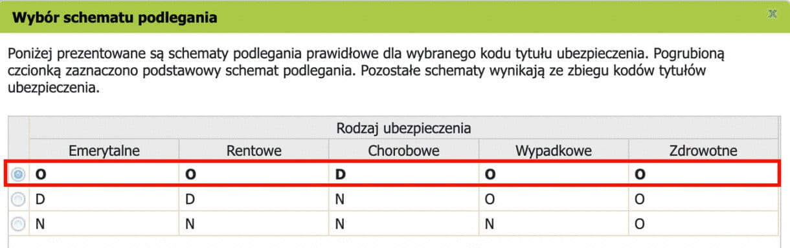
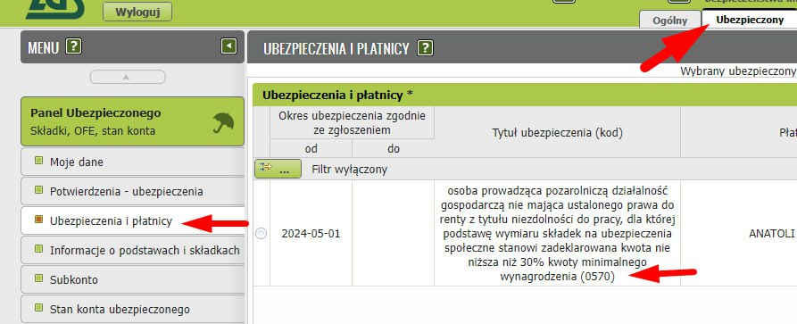

Переход на "Obniżone składki"¶
После 6 полных месяцев использования Ulga na start можно воспользоваться возможностью уплаты пониженных взносов ZUS (льгота "Obniżone składki", также известная как Składki preferencyjne) в течение 24 полных месяцев. Льгота заключается в том, что минимальные социальные взносы вычисляются на основе 30% минимальной заработной платы.
Официальный сайт
Когда переходить на składki preferencyjne
Что нужно сделать (в общих чертах)¶
Есть бухгалтер? Просто напомните ему о том, что у вас скоро заканчивается Ulga na Start. Нет бухгалтера? Читайте инструкцию ⬇️
- Сняться с учёта в ZUS с помощью бланка ZUS ZWUA.
-
Зарегистрироваться для страхования:
a. Если работаете параллельно на Umowa o Pracę и получаете ЗП выше минималки, то с помощью бланка ZUS ZZA;
b. Иначе с помощью бланка ZUS ZUA с новым кодом 0570 xx. Если вы переходите с ulga na start на składki preferencyjne, то ваш старый код: 0540, а новый: 0570.
-
Переключить в настройках inFakt/wFirma/iFirma на składki preferencyjne.
Подробно и наглядно каждый из этих шагов описан ниже.
Как попасть в онлайн кабинет плательщика ZUS?
См. доступные способы.
1. Снятие с учета (ZUS ZWUA)¶
Шаг 1¶
На странице zus.pl во вкладке e-Płatnik нужно открыть окно Dodaj dokument → выбрать новый документ типа ZUS ZWUA → нажать Wybierz → в появившемся диалоге нажать Przejdz do kreatora.
Далее в окне Obsługa ubezpieczonego как Cel obsługi нужно выбрать пункт Wyrejestrowanie ubezpieczonego (Снятие застрахованного с учёта). И нажать Dalej.

Шаг 2¶
Далее на шаге Wyrejestrowanie » Dane do wyrejestrowania ubezpieczonych нужно указать причину и дату снятия с учёта.
В поле Przyczyna wyrejestrowania нужно выбрать 600 - inna przyczyna wyrejestrowania, а в поле Data wyrejestrowania – первое число того месяца, в котором уже не действует льгота Ulga na Start (если делаете всё вовремя, то это текущий месяц). Остальные поля нужно оставить пустыми.
Нажать Dalej.

Шаг 3¶
Далее необходимо выбрать лицо, снимаемое с учёта с Kod tytułu ubezpieczenia 054000 и нажать Dalej.
Шаг 4¶
ZUS автоматически формирует комплект документов: создаётся не только ZWUA, но ещё и ZCNA для выписки из реестра родственников, находящихся на содержании.
Важно!
Чтобы не пришлось добавлять родственников заново после регистрации, не отправляйте ZCNA на следующем шаге!
Шаг 5¶
Проверить, верифицировать и выслать документ ZWUA в ZUS.
TODO: помогите сделать гайд лучше! добавьте сюда свои скриншоты.
Шаг 6¶
Если у вас есть родственники, находящиеся на содержании: перейдите в Dokumenty -> Dokumenty robocze, выделите ZCNA и удалите их при помощи кнопки Usuń.
TODO: помогите сделать гайд лучше! добавьте сюда свои скриншоты.
2. Регистрация (ZUS ZUA) с кодом 05 70¶
Не спешите сразу после ZWUA отправлять заявку ZUA — пока ручная обработка первой заявки не завершена, ZUS не даст отправить вторую. Подождите, обычно это занимает 1-2 дня.
Шаг 1¶
На странице zus.pl во вкладке e-Płatnik нужно открыть окно Dodaj dokument → выбрать новый документ типа ZUS ZUA → нажать Wybierz → в появившемся диалоге нажать Przejdz do kreatora.
Далее в окне Obsługa ubezpieczonego как Cel obsługi нужно выбрать пункт Zgłoszenie ubezpieczonego (Постановка застрахованного на учёт). И нажать Dalej.

Шаг 2¶
На шаге "Zgłoszenie ubezpieczonego » Dane identyfikacyjne i ewidencyjne" заполнить Dane identyfikacyjne и Dane ewidencyjne в обоих вкладках. Можно загрузить уже имеющиеся в ZUS данные нажав "Wybierz z kartoteki".

Указывать ли паспорт?
Поля Typ dokumentu и Seria i numer dokumentu рекомендуется оставить пустыми. Достаточно указать свой PESEL.
Шаг 3¶
На шаге "Zgłoszenie ubezpieczonego Adres ubezpieczonego" проверьте свои адреса.
- Adres zameldowania - адрес прописки:

- Adres zamieszkania - адрес места жительства:

- Adres do korespondencji - адрес для корреспонденции.
Нажмите Dalej.
Шаг 4¶
На экране "Zgłoszenie ubezpieczonego » Tytuły ubezpieczeń" необходимо нажать Dodaj kod tytułu ubezpieczenia.


Здесь выбрать Kod tytułu ubezpieczenia. Напоминаем, что если вы переходите на składki preferencyjne, то выбирайте код 05 70.
Заполните в левой колонке Data powstania obowiązku ubezpieczenia (или Data zgłoszenia do ubezpieczenia): первое число того месяца, в котором начинает действовать новая льгота (если делаете всё вовремя, то это текущий месяц). Важно, чтобы это был тот же день, что и для ZUS ZWUA. Тогда у иностранца нет перерыва в страховании.
Нажмите Zatwierdź.
В окне Wybór schematu podlegania выберите подходящую схему принадлежности к страхованию. Если других источников соцстрахования кроме ИП у вас нет, то оставьте основную схему (выделена на скриншоте).

Перевод скриншота
Ниже представлены корректные схемы принадлежности к страхованию для выбранного кода страхового титула. Жирным шрифтом выделена основная схема. Остальные схемы обусловлены совпадением кодов страховых титулов.
| Emerytalne | Rentowe | Chorobowe | Wypadkowe | Zdrowotne | |
|---|---|---|---|---|---|
| ☑ | О | О | Д | О | О |
Легенда:
О - обязательный взнос
Д - добровольный взнос
В окне Kod tytułu ubezpieczenia в левой колонке:
-
Выберите нужные пункты в секции Obowiązkowe ubezpieczenia społeczne (Обязательное соцстрахование). Надо отметить 3 из 4 как на картинке (TODO: подходит ли инструкция для тех, кто параллельно работает на UoP?):
- Emerytalnemu
- Chorobowemu
- Rentowym
- Wypadkowemu
-
Obowiązkowe ubezpieczenie zdrowotne (Обязательное медстрахование). Должно быть заполнено.
В том же окне в правой колонке:
-
Dobrowolne ubezpieczenia społeczne (Добровольное соцстрахование).
- Chorobowym - тут можно при желании отметить складку хоробову, чтобы иметь возможность получать больничные в случае болезни. Chorobowa складка - опциональна. Можно снизить платежи в ZUS на 30+ злотых в месяц, если отказаться от этой складки, но тогда вы не сможете получить компенсацию больничных в случае болезни. Решение остаётся за вами. По результатам опроса в чате большинство предпринимателей отказывается от неё. Если отметили галочкой, то соответственно поставьте дату — первое число текущего месяца.
-
Dobrowolne ubezpieczenie zdrowotne (Добровольное медстрахование). Оставьте пустым.
Не забудьте в правой части выбрать Kod wykonywanego zawodu. Нужно для статистики. Подробнее см. в таблице кодов профессий.
Нажать "Dodaj".
В появившимся диалоге нажать "ОК".

Перевод скриншота
Информация
Сделанный выбор видов страхования привёл к изменению ранее выбранной схемы принадлежности.
На шаге "Zgłoszenie ubezpieczonego » Tytuły ubezpieczeń" выбрать только что созданное застрахованное лицо (ubezpieczonego) c кодом 057000.

Перевод скриншота
Заявление о застрахованном » Титулы страхования шаг 4 из 5
| Код титула страхования | Титул страхования | Дата возникновения обязательства |
|---|---|---|
| ☑ 057000 | Лицо, осуществляющее несельскохозяйственную предпринимательскую деятельность, не имеющее установленного права на пенсию по нетрудоспособности, для которого базой для расчёта страховых взносов является задекларированная сумма не ниже 30% минимальной заработной платы | 2021-12-01 |
Нажать Dalej.
Шаг 5¶
Проверить, верифицировать и выслать документ в ZUS.
TODO: помогите сделать гайд лучше! добавьте сюда свои скриншоты.
Шаг 6¶
Подождать, пока ZUS обработает заявку. Если всё ок, то должно быть вот так:

3. Переключение настроек сервиса для ведения бухгалтерии¶
Постарайтесь не допускать рассинхронизации настроек ZUS на сайте zus.pl с настройками ZUS в вашей программе для ведения бухгалтерии. Поэтому после того, как сообщили о переходе на новую льготу в ZUS, залезьте в настройки вашей программы.
В этом месяце вы отправите несколько разных деклараций в ZUS:
DRA
Оплата ZUS и отправка ZUS DRA с 1 по 20 число месяца, следующего за отчётным.
ZWUA и ZUA/ZZA
ZUS ZWUA и ZUS ZUA/ZZA требуется отправить в ZUS с 1 по 7 число того месяца, в котором вы начали пользоваться льготой składki preferencyjne.
В связи с этим у многих начинающих предпринимателей возникает вопрос:
А очерёдность отправки деклараций имеет значение?
Нет. Не важно, в каком порядке совершать эти действия. Просто соблюдайте сроки.
Изменять настройки в inFakt/iFirma/wFirma рекомендуется после того, как отправите перечисленные выше документы.
wFirma¶
Особое внимание очерёдности действий должны уделить пользователи wFirma.
wFirma после переключения в настройках на składki preferencyjne будет генерировать ZUS DRA как будто за предыдущий месяц у вас тоже были składki preferencyjne (без ulga na start). Из-за чего ZUS откажется принимать декларацию с неправильными кодом и суммой взносов (ошибка 69004101).
Поэтому лучше так:
- сначала сгенерируйте ZUS DRA за предыдущий месяц (ваш последний DRA с ульгой на старт);
- отправьте DRA в ZUS;
- оплатите ZUS (этот шаг можно сделать и раньше и позже - не важно);
- только после этого переключите ZUS в настройках wFirma на składki preferencyjne.
📚 Источник: Koniec ulgi na start - przejście na preferencyjne składki ZUS
Подсказка
Календарь wFirma подскажет вам, когда переключить настройки.

Ustawienia => Podatki => ZUS
Замените "Tylko zdrowotne — 6-miesięczna ulga na start" на "2-letni preferencyjny ZUS".

Исключение: если вы ведёте предпринимательскую деятельность параллельно с работой по Umowa o Pracę (UoP), и ваша зарплата по UoP не ниже минимальной, то składki społeczne за вас платит работодатель. В этом случае вы освобождены от уплаты składki społeczne за себя как JDG — выбирайте "Tylko zdrowotne — 2-letni preferencyjny ZUS". Вы же подали ZUS ZZA на предыдущем этапе? То же самое касается и предпринимателей, которые получают пенсию.

UPP - подтверждение отправки¶
См. UPP.
Типичные ошибки¶
См. сборник ошибок.